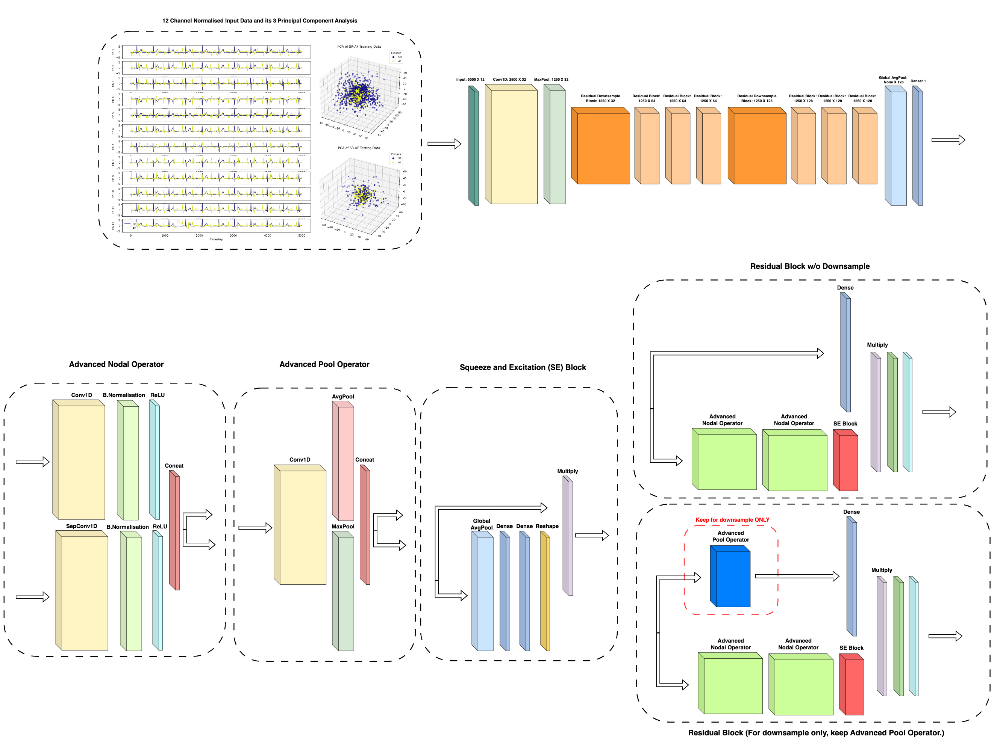
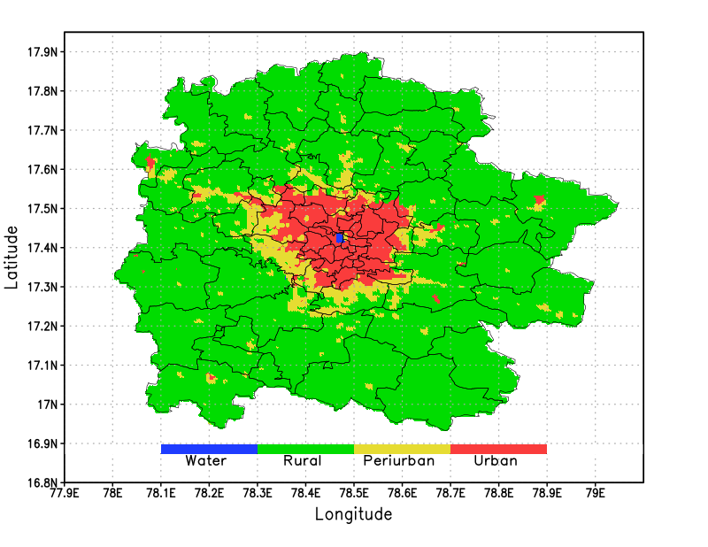

|
Soumil Hooda Silicon Engineer at Google I graduated in 2025 from BITS Pilani, Hyderabad, with a dual degree: a Bachelor of Engineering in Electrical and Electronics, and a Master of Science in Physics. During undergrad, I worked on atmospheric water vapor retrieval from satellite occultation data at the Space Applications Centre (ISRO), finger flexion estimation from neural recordings at CSIR-CEERI, and peri-urban area estimation and arrhythmia classification at BITS Pilani. The work was guided by Prof. Manik Gupta, Prof. Rajesh Tripathy, and Dr. Satya Prakash Ojha. On the industry side, I’ve spent time working close to silicon. During my internship at Texas Instruments, I worked on developing an assertion-based formal verification IP for a real-time microcontroller platform, with a focus on reusable, property-driven verification infrastructure. Alongside this, I spent some time exploring whether graph-based representations of finite-state machines could be fed into GNNs to reason about protocol behavior, more out of curiosity than conviction. I later interned at Google, where I worked on infrastructure for generating and integrating subsystem-level RTL based on architectural configuration. The work touched the full spectrum of auxiliary logic bring-up, covering power intent, clock/reset domain crossing, linting, and register collateral, and gave me a systems-level view of how large SoC blocks are stitched together. I now work full-time at Google as a Silicon Engineer, on a first-party cache-coherent interconnect. At its core, this is the hardware that keeps a chip's processors, memory controllers, and accelerators in agreement about what is in memory. My work spans RTL design and power estimation. Email / Google Scholar / LinkedIn / Github / X |
{kind=link}
News
|
ThoughtsI write about the physical world that software runs on: power grids, nuclear energy, semiconductor supply chains, and the geopolitics that tightens all three.
|
ReadsH1 2026 Reads
H2 2025 Reads
H1 2025 Reads
|
Research |
|
 |
SERN-AwGOP: Squeeze-and-Excitation Residual Network With an Attention-Weighted Generalized Operational Perceptron for Atrial Fibrillation Detection
Soumil Hooda*, Rajesh Kumar Tripathy IEEE Access, 2025 SERN-AwGOP detects atrial fibrillation from ECG with high accuracy, robustness to noise, and strong cross-dataset generalization. |
|
 |
Supervised Model for Peri-Urban Area Demarcation in Hyderabad, India
Ravi Bhushan, Soumil Hooda*, Hiten Vidhani, Manik Gupta, Lavyana Suresh, Timothy Clune IEEE Geoscience and Remote Sensing Letters, 2024 RBF-SVM model maps peri-urban expansion near Hyderabad, revealing 108% growth. |

|
Retrieval of Atmospheric Water Vapor Profiles From COSMIC-2 Radio Occultation Constellation Using Machine Learning
Soumil Hooda*, Manik Gupta, Randhir Singh, Satya P. Ojha IEEE Transactions on Geoscience and Remote Sensing, 2023 ANN model retrieves atmospheric water vapor from COSMIC-2 data, outperforming existing methods. |
|
Last updated on . |